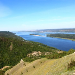

Достопримечательности

Жигулёвский заповедник
Музей АвтоВАЗа в Тольятти

Жигулёвская ГЭС
Самарская область -
живописный поволжский край, где находится знаменитая Самарская Лука с Жигулёвскими горами: Волга делает крутой и красивый изгиб, практически замыкаясь в кольцо. Этот природный феномен – визитная карточка региона. Но не только своим «лукоморьем» привлекает туристов Самарская область: здесь расположены автомобильная столица России – Тольятти, где регулярно проводятся соревнования по автоспорту, старинная уютная Сызрань с множеством памятников истории и архитектуры, колоритный средневековый замок Гарибальди в духе неоготики и Ренессанса, а также одно из самых красивых сёл в стране – Шилово, где Илья Репин написал «Бурлаков на Волге».